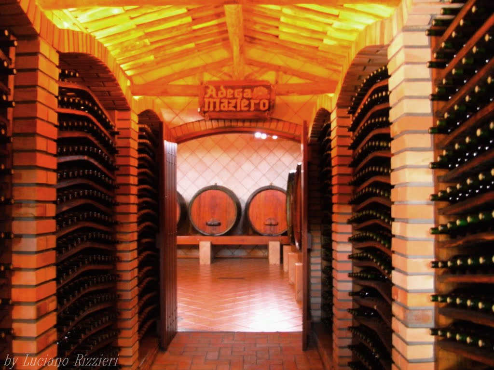

Conheça o projeto que busca mostrar Jundiaí de um jeito diferente.
Jundiaí possui diferentes atrações que permitem conhecer a cidade por meio de sua história, cultura, gastronomia, natureza e tradições.
Para facilitar essa experiência, o turismo da cidade reúne diferentes roteiros que apresentam lugares e atividades para todos os gostos.

Lugares para diversão e lazer.

Conheça a história e arquitetura de Jundiaí.

Descubra a gastronomia da cidade.

Conheça a tradição da produção de uvas e vinhos.

Descubra a influência italiana presente na cidade.
Escolha uma rota, explore novos lugares e descubra um pouco mais de Jundiaí.